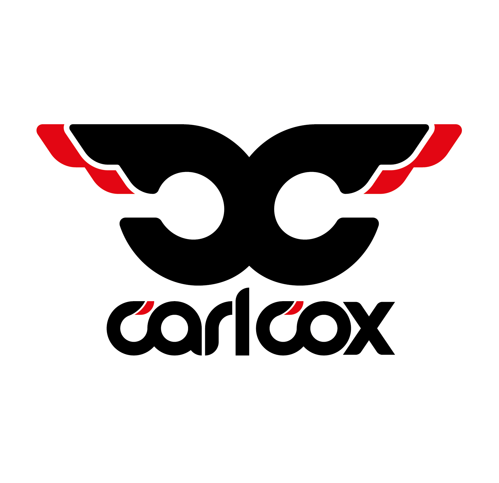

De opdracht
Bij deze opdracht moesten we de website van een zelf gekozen artiest opnieuw ontwerpen. Ik heb voor de website van Carl Cox gekozen. Ik heb voor deze website gekozen, omdat de website er erg verouderd uitziet. Daarnaast was de website totaal niet responsive. Dit kwam goed uit, omdat de website responsive maken onderdeel van de opdracht is. Om de website responsive te maken, heb ik de website mobile first ontworpen. Ik heb voor een rustig kleurenschema gekozen en voor een rustig lettertype. Ik was heel erg blij met het uiteindelijke resultaat. Doordat ik zo blij was met mijn ontwerp heb ik ook erg genoten van het maken van mijn website.
Grafisch ontwerp